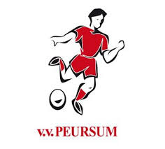

hobby's
mijn hobby is voetbal. ik zit al 5 jaar op voetbal en dit jaar wordt het mijn zesde. mijn voetbalvereneging heet vv peursum en het ligt in giessenburg. de reden dat ik op voetbal ging komt door mn broertje. het ging allemaal heel simpel eigenlijk. mijn broertje besloot een paar jaar terug om op voetbal te gaan en vroeg aan me of ik het ook wou. destijds had ik niet veel beters te doen en besloot om het toch maar te gaan proberen. sindsdien is voetbal mijn favoriete sport geworden. dit jaar speel ik bij peursum jo 19-2. zelf vind ik het een redelijk leuk team, want ik speel met mensen waar ik al eerder mee in een team zat.

weer terug naar begin pagina